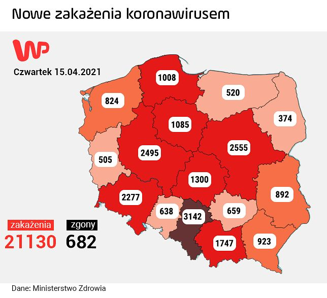

Pękła kolejna bariera. Najnowszy raport MZ dotyczący koronawirusa w Polsce
Ministerstwo Zdrowia opublikowało najnowszy raport dotyczący liczby zakażeń koronawirusem w Polsce. Jak wynika z danych, 15 kwietnia przybyło 21 130 nowych przypadków. Z powodu zakażenia koronawirusem zmarły 682 osoby. Łącznie z powodu COVID-19 zmarło już ponad 60 tys. osób.
Koronawirus w Polsce. Jest najnowszy raport Ministerstwa Zdrowia z 15 kwietnia
Źródło: East News
Jest najnowszy raport Ministerstwa Zdrowia ws. epidemii koronawirusa w Polsce. Jak wynika z danych, w ciągu ostatniej doby przybyło 21 130 nowych przypadków. W zeszłym tygodniu (8 kwietnia) było to 27 887 zakażeń.
Koronawirus w Polsce. Najnowszy raport Ministerstwa Zdrowia
"Z powodu COVID-19 zmarło 175 osób, natomiast z powodu współistnienia COVID-19 z innymi schorzeniami zmarło 507 osób" - informuje resort zdrowia.
Łącznie zmarły 682 osoby, a to oznacza, że przekroczyliśmy liczbę 60 tys. ofiar koronawirusa (60 612 - red.) od początku epidemii w Polsce. W tym czasie koronawirusem zakaziło się 2 642 242 osób.
Majówka groźna dla życia. Rzad przedłuża obostrzenia
Najnowsze przypadki zakażeń koronawirusem pochodzą z województw: śląskiego (3142), mazowieckiego (2555), wielkopolskiego (2495), dolnośląskiego (2277), małopolskiego (1747), łódzkiego (1300), kujawsko-pomorskiego (1085), pomorskiego (1008), podkarpackiego (923), lubelskiego (892), zachodniopomorskiego (824), świętokrzyskiego (659), opolskiego (638), warmińsko-mazurskiego (520), lubuskiego (505), podlaskiego (374).
"186 zakażeń to dane bez wskazania adresu, które zostaną uzupełnione przez inspekcję sanitarną" - czytamy w raporcie.
Jak poinformował resort zdrowia, w szpitalach znajdują się obecnie 33 253 osoby - to o 653 mniej niż w środę 14 kwietnia. Z kolei leczenia respiratorem wymaga 3443 pacjentów (-14). Na przymusowej kwarantannie przebywa 352 951 osób.
Ministerstwo Zdrowia przekazało też dane dotyczące liczby testów na obecność koronawirusa, którą wykonano w ciągu ostatniej doby. To ponad 91,1 tysięcy badań.
Pękła kolejna bariera. Najnowszy raport MZ dotyczący koronawirusa w Polsce
Źródło: WP, Fot: WP
Koronawirus w Polsce. Lockdown przedłużony. Co z majówką?
Przez Polskę przetacza się III fala zakażeń koronawirusem. W środę odnotowano 21 283 przypadki. Z powodu COVID-19 zmarły 803 osoby. Jak zaznacza Ministerstwo Zdrowia, zauważalny jest spadek liczby zakażeń, jednak "apogeum przechodzi teraz przez szpitale".
W związku z dużą liczbą ofiar koronawirusa, a także złą sytuacją w polskich placówkach medycznych, w środę Ministerstwo Zdrowia poinformowało o przedłużeniu obostrzeń o kolejny tydzień - do niedzieli 25 kwietnia.
Zdecydowano się jednak na pewne wyjątki. - Od najbliższego poniedziałku dzieci będą mogły wrócić do przedszkoli i żłobków. Przywrócimy też możliwość uprawiania sportu na świeżym powietrzu dla grup do 25 osób - przekazał Adam Niedzielski. Tym samym potwierdził wcześniejsze doniesienia Wirtualnej Polski.
Zapadła też decyzja ws. zbliżającej się majówki. - Do 3 maja nie będzie możliwe prowadzenie działalności hoteli i miejsc noclegowych. Ten zakaz jest przedłużony o kolejne dwa tygodnie, by nie było dylematów, co do planów majówkowych - tłumaczył minister zdrowia.